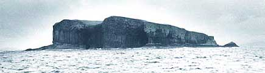

The Island of Staffa
West coast of Scotland

The Hebridean Overture by Mendelssohn
midi file
Staffa Links:
Ian Miller went there!
Fingal's Cave
Turner Engraving
Visit
Staffa
Maintained by:
Chris Jennings
HOME
Last Updated: